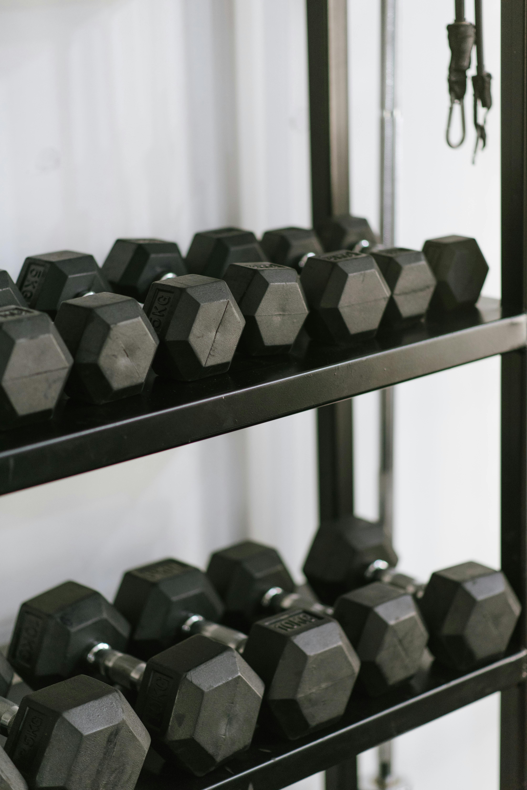

At-Home Training
You don’t need fancy gym equipment to get in shape—many effective exercises can be done with just your body weight or everyday items you already have at home. Bodyweight exercises, such as squats, push-ups, planks, lunges, and glute bridges, are great starting points. Squats help strengthen your legs, glutes, and core. Start by standing with feet hip-width apart and lowering your hips as if sitting in a chair, then standing back up. Push-ups target the chest, arms, and core. Begin in a plank position with your hands slightly wider than shoulder-width apart, lower your body towards the floor, and then push back up. Planks are excellent for building core strength—hold a push-up position, keeping your body straight from head to heels for 30 seconds or more. Lunges engage your legs and glutes, and glute bridges activate the posterior chain. To perform a glute bridge, lie on your back with knees bent and feet flat on the floor, then lift your hips toward the ceiling and squeeze your glutes before lowering back down. If you don’t have dumbbells or kettlebells, everyday household items can serve as great alternatives. For example, you can use a sturdy chair for dips, targeting your triceps. Sit on the edge of the chair, place your hands behind you, and lower your body by bending your elbows before pushing back up. For a makeshift weight, fill a backpack with books or other heavy items and use it for rows, targeting your back muscles. Water bottles or cans can also function as light dumbbells for exercises like bicep curls or shoulder raises. Towels can be used for resistance exercises—loop one around a door handle and use it to perform rows or chest pulls. With a little creativity, you can perform a full-body workout using nothing but what you have around you, making it simple and cost-effective to stay fit at home.
